Ministry of Tourism Lebanon
DISCOVER LEBANON
The Lebanese table is defined by abundance and generosity. The mezze tradition, dozens of small dishes placed at the center for everyone to share, reflects a deeply held belief that food is communal, that a guest should never be hungry, and that a meal is an occasion rather than a transaction.
Lebanese cuisine draws on centuries of agricultural tradition in the fertile Beqaa Valley, the olive groves of the south, and the herb gardens of the mountain villages. Fresh herbs, olive oil, lemon, garlic, and seasonal vegetables are the backbone of almost every dish.
From the street food stalls of Sidon to the fine dining restaurants of Beirut, food in Lebanon is always worth seeking out, and always worth staying a little longer for.
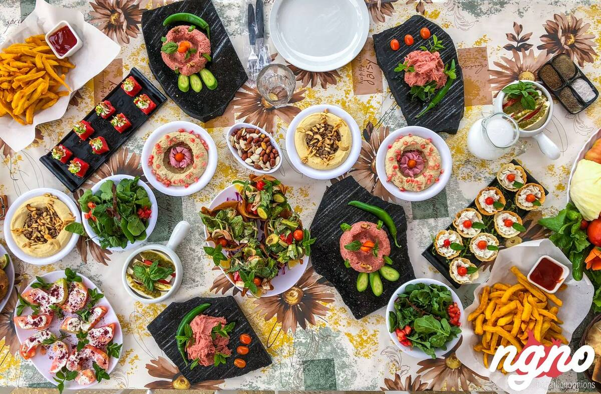
|
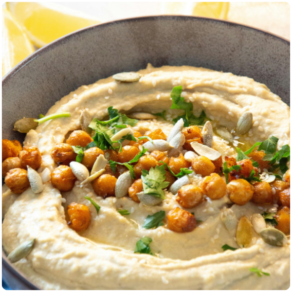 HUMMUSA traditional dish made from mashed chickpeas blended with tahini, olive oil, lemon juice, and garlic. It is commonly served as an appetizer and is a staple in Lebanese cuisine. |
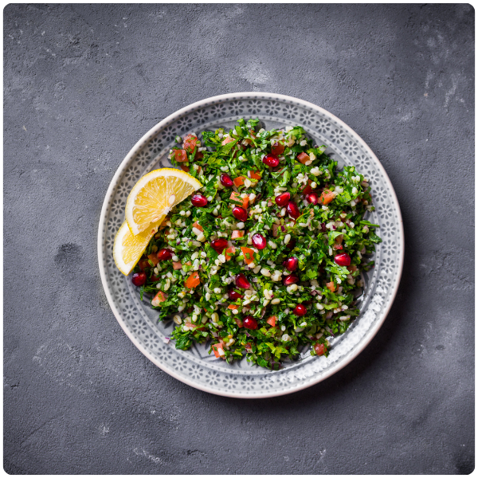 TABBOULEHA fresh salad made primarily of finely chopped parsley, tomatoes, onions, bulgur wheat, lemon juice, and olive oil. It is known for its refreshing taste and nutritional value. |
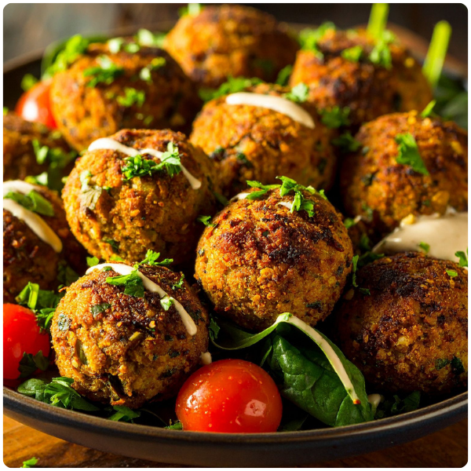 FALAFELDeep-fried balls made from ground chickpeas or fava beans mixed with herbs and spices. Falafel is often served in pita bread with vegetables and tahini sauce. |
|
|
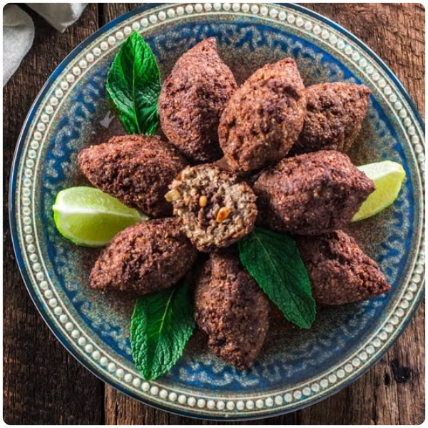 KIBBEHConsidered Lebanon's national dish, kibbeh is made from ground meat, bulgur wheat, and spices. It can be prepared in different forms, fried, baked, or raw. |
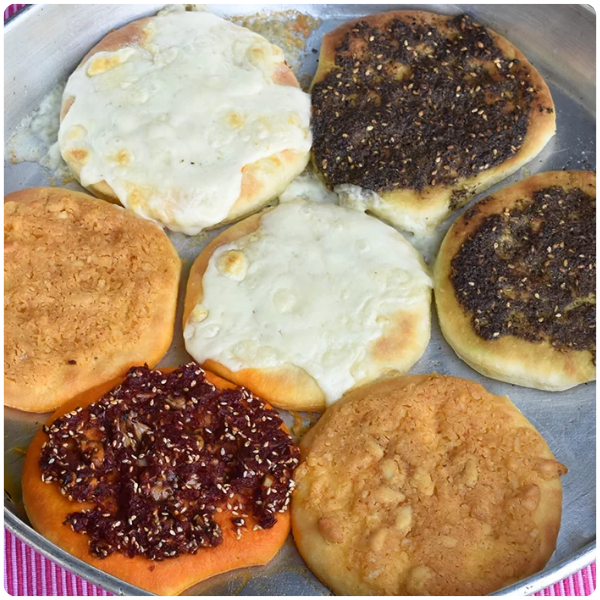 MANAKISHA popular flatbread topped with za'atar, cheese, or minced meat. Commonly eaten for breakfast or as a street food, often called Lebanon's answer to pizza. |
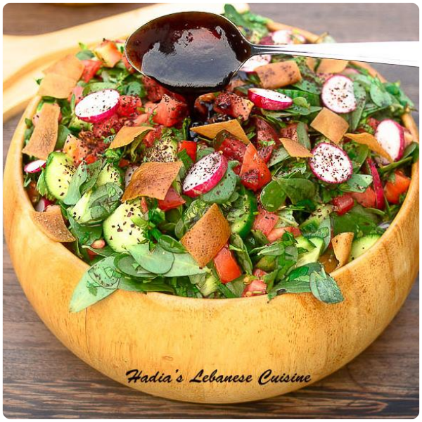 FATTOUSHA traditional salad made with mixed vegetables, herbs, and pieces of toasted or fried pita bread. Seasoned with olive oil, lemon juice, and sumac. |
|
|
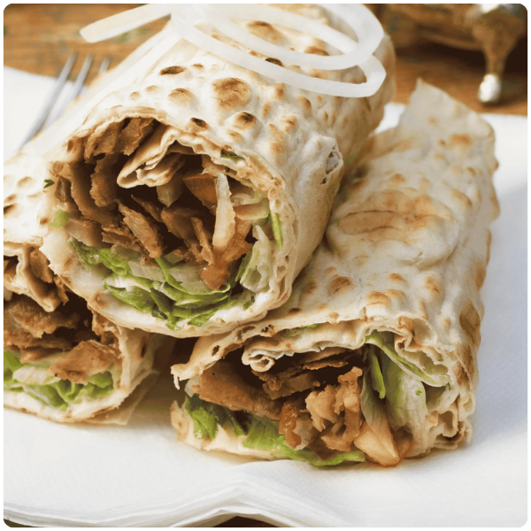 SHAWARMAThinly sliced meat, usually chicken or beef, roasted on a vertical spit and served in flatbread with vegetables and sauces. One of the most popular street foods in Lebanon. |
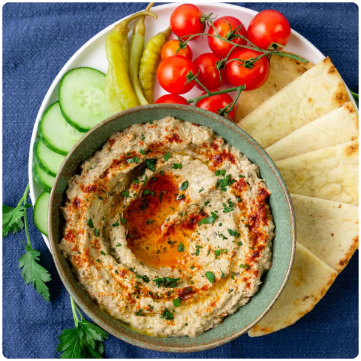 BABA GHANOUSHA smoky eggplant dip mixed with tahini, garlic, lemon juice, and olive oil. Commonly served as part of a mezze platter and one of the most beloved Lebanese appetizers. |
BAKLAVAA sweet dessert made of layered pastry filled with nuts and sweetened with syrup or honey. Traditionally served during celebrations alongside strong Arabic coffee. |
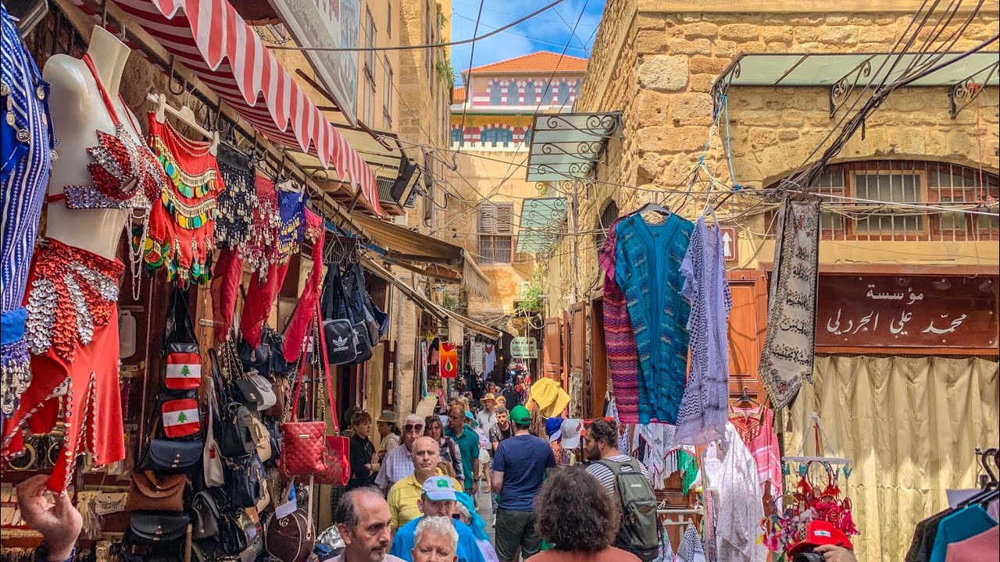
A labyrinth of vaulted passageways selling spices, fresh produce, sweets, and local delicacies. The famous Sidon kunafa draws visitors from across the country.
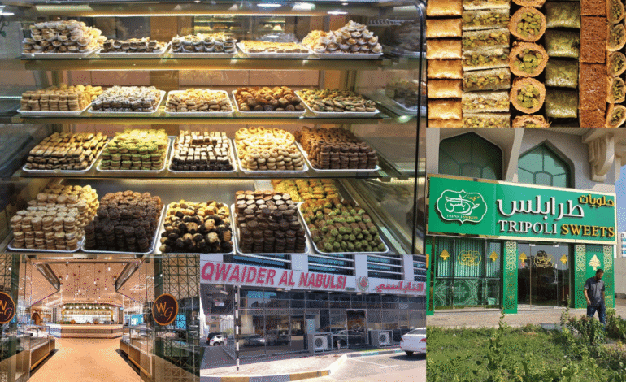
Tripoli is Lebanon's sweets capital, famous for halawet el-jibn, kaak, and its extraordinary variety of syrup-drenched pastries. The old city's sweet shops have operated for generations.
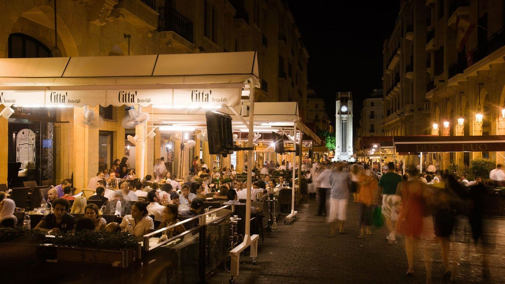
Beirut's restaurant scene ranges from hole-in-the-wall shawarma shops open until 3 AM to internationally acclaimed fine dining. Gemmayzeh and Mar Mikhael are the densest dining neighborhoods.
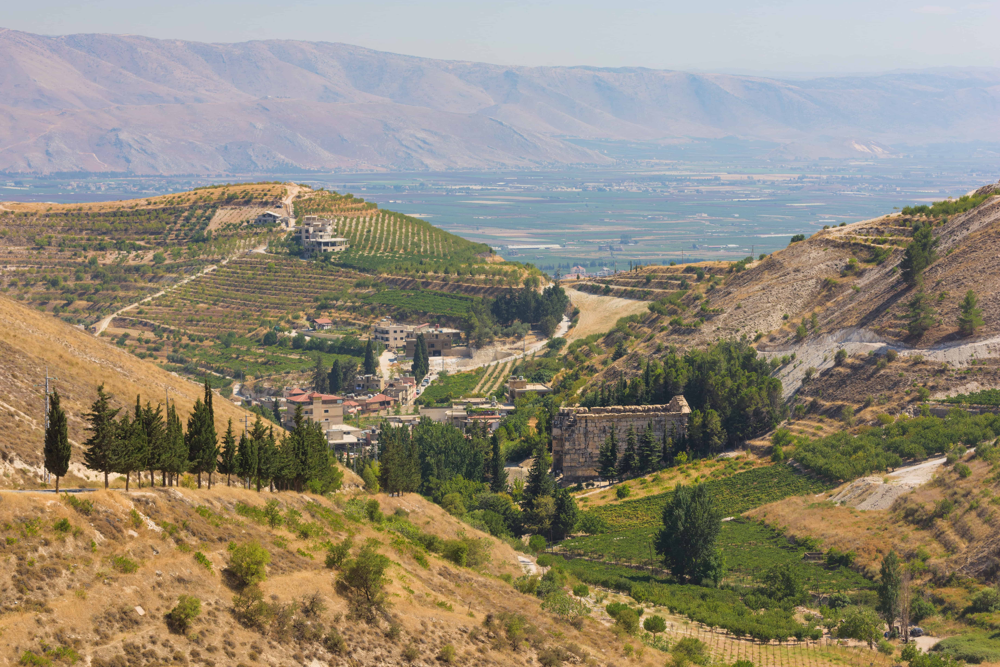
Lebanon's wine country, Chateau Ksara, Chateau Musar, and Chateau Kefraya among others, offers cellar tours and tastings in a valley that has been producing wine for 3,500 years.
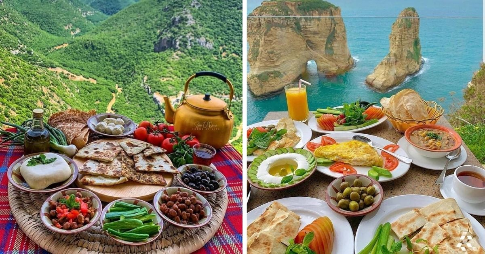
The Lebanese mountain breakfast, labneh, zaatar, olives, and fresh manakish from the village oven, eaten at a table overlooking a valley is one of Lebanon's most defining food experiences.
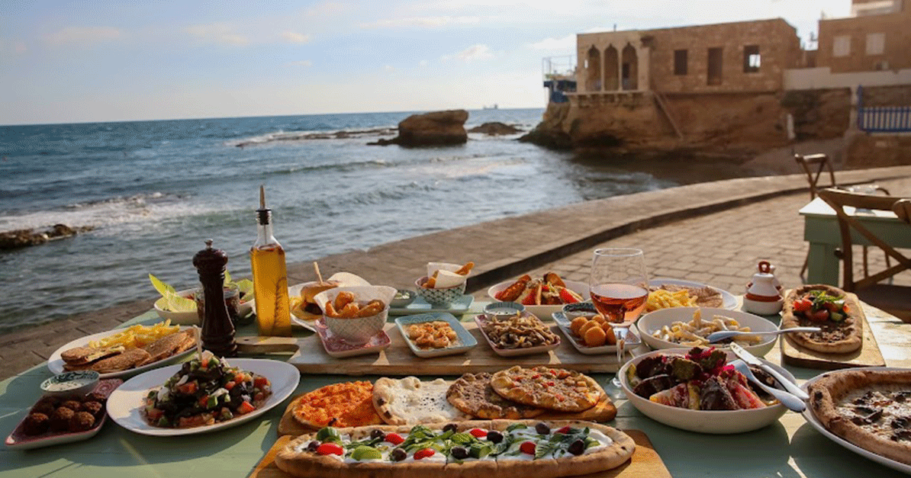
Fresh fish grilled simply with lemon and olive oil, eaten on a terrace above an ancient port. Byblos, Batroun, and Tyre are especially celebrated for the quality of their seafood.
The best way to understand Lebanese culture is through its food, and the most memorable experiences go well beyond the restaurant menu.
Traditional Cooking Classes, Mountain Villages
Learn to make kibbeh, roll grape leaves, and prepare a full mezze spread with a home cook in a mountain village — a direct connection to Lebanese culinary identity.
Winery Tours, Beqaa Valley
Visit Chateau Ksara, Musar, or Kefraya for cellar tours and tastings. Lebanon's ancient wine country now produces bottles that win international recognition.
Street Food Tours, Beirut & Tripoli
Guided street food walks through the old cities introduce visitors to the full spectrum of Lebanese informal eating — falafel, kaak, fresh juice, and manakish from a wood-fired oven.
Artisan Food Producers, Nationwide
Small-batch olive oil from the south, mountain honey from Akkar, aged labneh from village cooperatives. Visiting producers directly is one of the most authentic food experiences Lebanon offers.
The Long Mezze Lunch, Coastal Restaurants
The quintessential Lebanese food experience: an unhurried mezze lunch by the sea, with dish after dish arriving for hours — Lebanese hospitality in its most concentrated and pleasurable form.
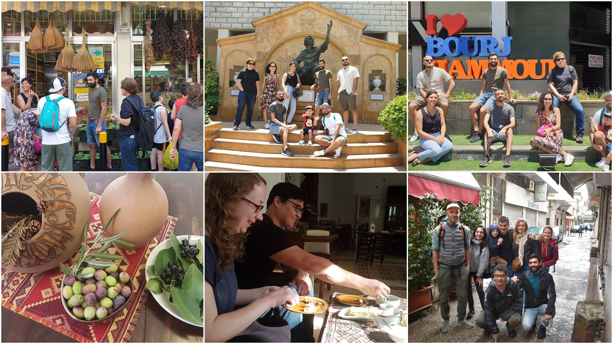
Lebanese food has spread worldwide with the diaspora, from São Paulo to Sydney, from Paris to Lagos. This global footprint makes Lebanese cuisine one of the country's most recognized and loved international exports.
Food tourism that seeks authentic local products, Beqaa wine, southern olive oil, mountain honey, directly supports Lebanese farmers and creates incentives to maintain traditional agricultural landscapes.
A country where every meal is an event, where lunch lasts three hours and dinner stretches past midnight, naturally encourages longer stays and higher spending per visit.
Traditional recipes and techniques risk being lost as younger generations leave village life. Cooking classes and artisan food visits create economic value for these traditions and give communities a reason to pass them on.
A street falafel and a five-course tasting menu are both authentically Lebanese. Food tourism is democratic by nature, it includes every type of visitor regardless of budget or interest.
In Lebanon, feeding a guest well is an expression of identity and pride. Food tourism delivers something no guidebook can fully capture, the feeling of being genuinely welcomed into someone else's culture.
©2026 All Rights Reserved - Ministry of Tourism Lebanon